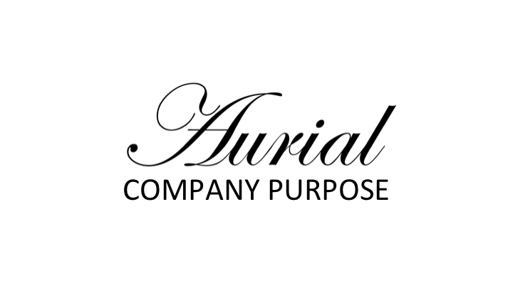

Project type: User research, UX Design, and pitch for New York Innovation Trek with U of M's entrepreneurship program
Date: Fall 2015
Tools: KJ Method, Photoshop
Timeline: 5 weeks
Teammate: Isabel Gao
Sponsor: UMSI Entrepreneurship Program
People who would benefit from hearing aids refuse to wear them – in large numbers. In addition to cost concerns - devices can be thousands of dollars and are not covered by insurance - hearing aids are stigmatized and linked to oldness and
disability. Unlike glasses, assistive wearable devices that contribute to wearers’ sense of personal style, hearing aids are meant to remain out of sight.

In a fast-paced five week program my team used feedback from roughly a dozen user interviews to design a concept, "Aurial," to combat these challenges. We sought to reframe misconceptions and stereotypes about hearing devices and hearing
loss through the design of classic, minimalist jewelry attachments that link effortlessly to behind the ear hearing aids. Our concept empowers women to address hearing loss rather than hide it.
We developed this work into a pitch for a potential company based on the concept. We used market database research and competitive analysis to guide our company’s direction and feedback we received in our user interviews to determine whether
to pivot or refine our purpose. At the end of the program, we pitched our concept for New York City startups: Tumblr, Mighty, Startup Health, Cooper-Hewitt (Smithsonian), the Food Network, and METRO.